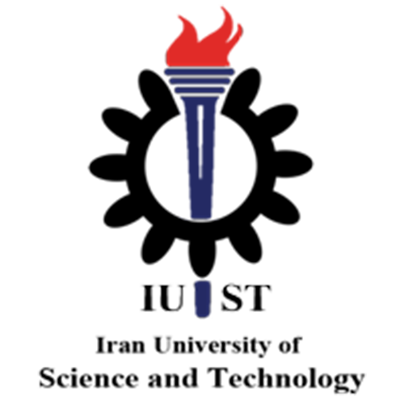
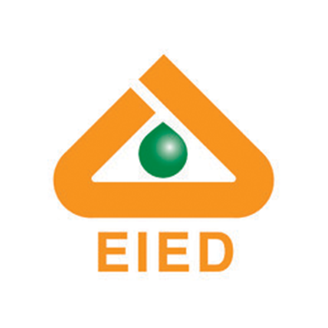
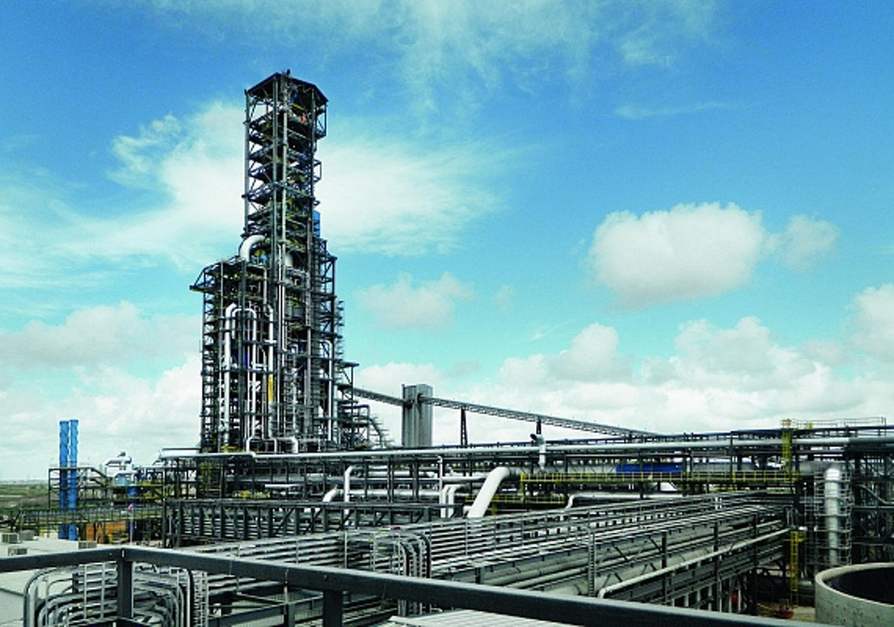
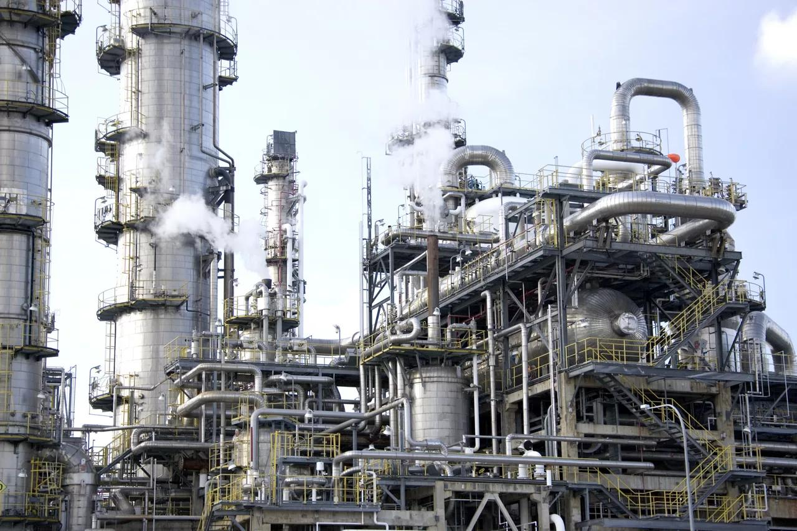
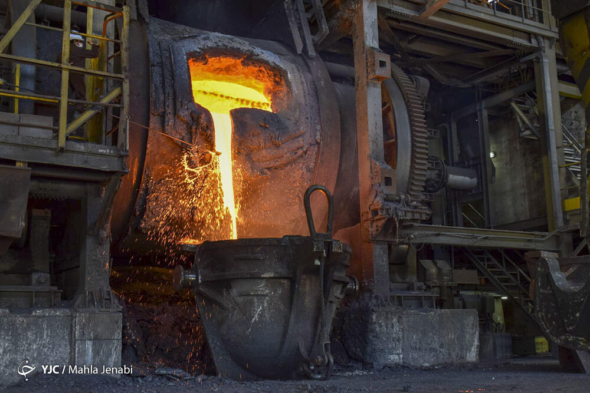
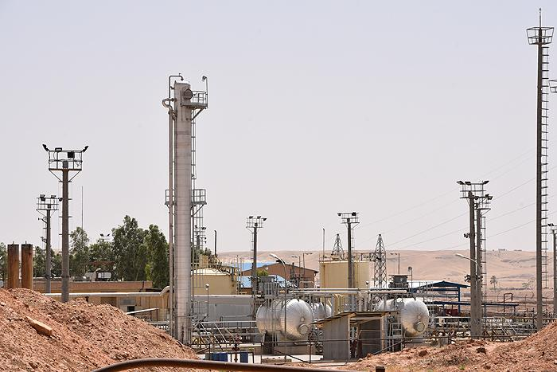
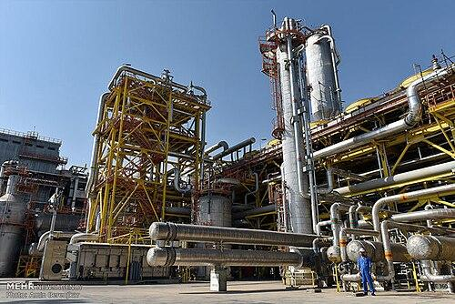
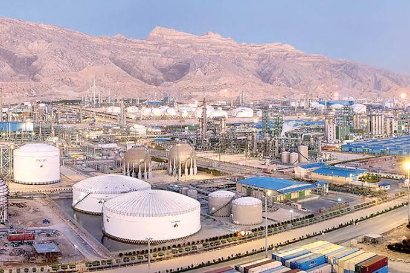
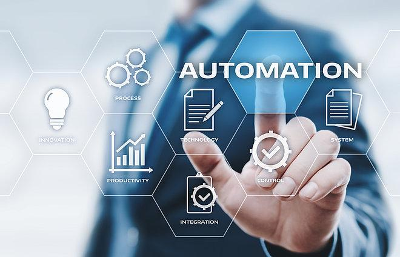
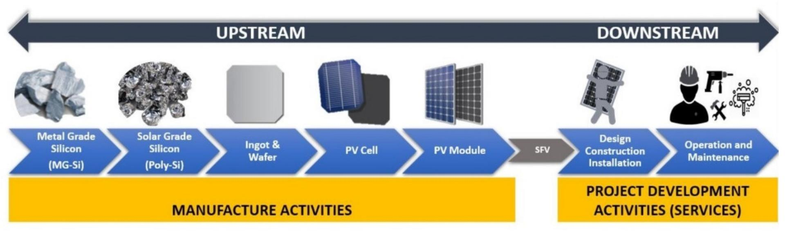

Apr 2026 — heute
Köln, Deutschland · On-site
Köln, Deutschland · On-site
Werkstudent
Studentische Tätigkeit · Teilzeit
Apr 2026 — heute · Cologne, North Rhine-Westphalia, Germany · On-site

International Business · Einkauf & Supply Chain · Projektkoordination
Köln, DeutschlandInternational Business, Procurement & Projektkoordination professional with 10+ years of experience across industrial, EPC, process automation, petrochemical, metals and energy-related projects.
Ich bin im Bereich International Business, Einkauf & Supply Chain sowie Projektkoordination tätig with 10+ years of experience across industrial, EPC, process automation, petrochemical, metals and energy-related projects. I have managed procurement portfolios exceeding €10M across 8 national-scale projects and negotiated with 30+ international suppliers across Europe and Asia.
My experience covers international sourcing, tendering and RFQs, supplier and OEM coordination, commercial and contract negotiations, technical and commercial bid evaluation, INCOTERMS, shipping and inspection documentation, bank guarantees, customs clearance, client coordination, engineering interfaces, manufacturing coordination, site execution, pre-commissioning and commissioning.
I combine an M.Sc. in Chemical Engineering with an ongoing M.A. in International Management, with a chosen specialty in Project Management at Hochschule Fresenius in Cologne. This combination allows me to connect technical requirements, procurement decisions, commercial considerations and project execution.
Internationale Geschäftskoordination, Export-/Importkoordination, kaufmännische Verhandlungen, Kunden- und OEM-Kommunikation, Angebote, Verträge und INCOTERMS.
Strategisches Sourcing, Beschaffungsplanung, RFQs und Ausschreibungen, Lieferantenqualifizierung, internationaler Einkauf, Angebotsbewertung, Lieferantenperformance und Logistik.
EPC-Projektabwicklung, Engineering- und Fertigungskoordination, Terminplanung, Inspektionen, Schaltschränke, Prozessautomatisierung, Baustellenabwicklung und Inbetriebnahme.
Fortgeschrittenes Excel, MS Project, PowerPoint, Visio, Outlook, Aspen HYSYS und MATLAB / Simulink für Reporting, Planung, Analyse und technische Aufgaben.
Kaufmännische Perspektive
Verknüpfung von Lieferantenverhandlungen, Verträgen, internationalem Einkauf und Kundenanforderungen.
Technisches Verständnis
Verbindung des Chemieingenieurwesens mit Erfahrung in Automatisierung, Leitsystemen, Fertigung und Industrieprojekten.
Projektkoordination
Verknüpfung von Engineering, Einkauf, Fertigung, Logistik und Baustellenteams zur Erreichung der Projektziele.
International Berufserfahrung
Zusammenarbeit mit Lieferanten, OEMs und Stakeholdern in Europa und Asien.
Studentische Tätigkeit · Teilzeit
Apr 2026 — heute · Cologne, North Rhine-Westphalia, Germany · On-site
Held both positions concurrently, combining procurement leadership with executive-level operational coordination across the company’s EPC project portfolio.


Selected projects demonstrating international sourcing, supplier coordination, logistics, engineering interfaces and project delivery across metals, Oil & Gas, petrochemical and energy environments.

National-scale DRI project using PERED technology.

Dual-site project with sites more than 60 km apart after the original foreign EPC contractor exited the country.

Expansion project requiring continuity of engineering and commissioning after the original international JV partner exited.

Upgrade and extension of an existing industrial control system in an operating industrial environment.

Supply of specialized loading and unloading equipment from an international manufacturer.

Control-system addition for a new loading station within an active petrochemical facility.

Control-systems technical support, structured training and knowledge transfer for client personnel.

Strategic feasibility study for a major state-owned power generation conglomerate, focused on the photovoltaic supply chain.
An investigation on the viscosity reduction of Iranian heavy crude oil through dilution method
Iranian Journal of Chemistry and Chemical Engineering · 2021 · 40(3), 934–944
Publikation ansehen ↗
Internationaler Studierenden-Mentor — Hochschule Fresenius
Unterstützung internationaler Studierender bei Hochschulprozessen, Administration und Integration.
Kursvertreter — Hochschule Fresenius
Vermittlung zwischen Studierenden, Lehrenden und Administration.
Volunteer Berufserfahrung
Langjähriges gesellschaftliches Engagement seit 2008.
A concise view of the academic and professional milestones that shaped my transition from chemical engineering into procurement, project coordination and international management.
Started a B.Sc. in Chemical Engineering at Iran University of Science and Technology.
Specialized in Control, Simulation and Modeling at IUST.
Completed a process engineering internship and worked as a Research Assistant before entering industrial procurement.
Started as a Procurement Specialist, working with engineering, suppliers and project teams on sourcing, delivery tracking and documentation.
Defended the M.Sc. thesis in March 2018 and expanded into broader project and executive coordination responsibilities.
Worked across 8 national-scale EPC and industrial manufacturing projects, coordinating engineering, procurement, logistics, manufacturing and external partners.
Moved to Germany, began an M.A. in International Management at Hochschule Fresenius and continued professional development in Cologne.
Combining 10+ years of industrial experience with international management studies, mentoring and active professional development in Germany.
Based in Köln, Deutschland. Interested in opportunities across international business, procurement, supply chain, project coordination, PMO and related commercial functions.